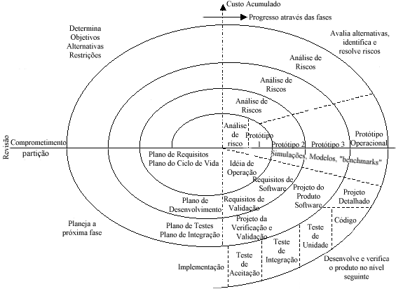
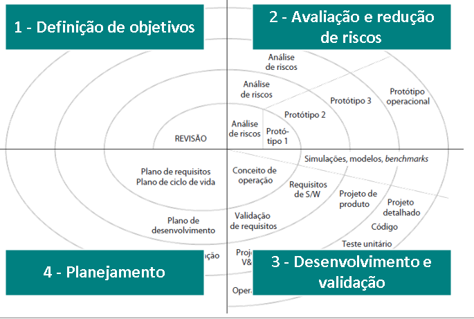

Modelo Espiral
O Modelo Espiral é um modelo completo que utiliza a natureza iteirativa da Prototipação com os aspectos sistematicos do Modelo Cascata.
Desta forma, o Modelo Espiral segue duas características que o diferencia dos outros, sendo elas: Uma abordagem cíclica que amplia o grau de definição e a implementação do sistema(diminuindo consequentemente o grau de risco) e, consiste em uma série de "pontos âncora", que são objetivos claros e mensuráveis que devem ser alcançados antes de passar para outras fases no ciclo espiral.
Características do Modelo Espiral

Pode-se dizer que o Modelo Espiral é aquele que prioriza os menores riscos, devido a sua organização ser em espiral e não como uma sequência de atividades, sendo representado em cada loop uma fase do projeto. Desta maneira, não há etapas definidas fixamente, sendo apenas ilustrativas as que estão na imagem, podendo ser elas relacionadas da seguinte forma:
- O "loop" mais interno é concentrado nas possibilidades do sistema.
- O segundo é os requisitos do sistema.
- O seguinte é o projeto do sistema.
- O ultimo é a construção do sistema.
Setores e suas características

- Definição dos Objetivos: É definido os objetivos que serão seguidos para cada fase do projeto, sendo identificados possíveis restrições e riscos, elaborando estratégias alternativas para contorna-los.
- Avaliação e Redução de Riscos: É feito uma análise cuidado-sa sobre todos os pontos do projeto e diversos passos devem ser tomados para previnir possíveis mudanças no software e problemas que causem prejuizos tanto ao desenvolvedor quanto para o cliente.
- Desenvolvimento e validação: Etapa esta que é possível ver os dois Modelos(Cascata e Prototipação), no qual, caso os riscos forem dominantes a prototipação é o melhor caminho no desenvolvimento de uma interface de usuários. Porém, caso os riscos for a integração de subsistemas, o modelo de cascata pode ser a melhor opção.
- Planejamento: Por fim, todo o projeto é revisado e é tomada a decisão de continuar ou não, no qual, caso for escolhido continuar são projetados planos para a próxima fase do projeto, ou seja, próximo loop de ações.
Vantagens e Desvantagens
Desta maneira, como todos os Modelos até este ponto, existem diversas vantagens e desvantagens, sendo elas:
- Vantagens: É feito a adição de um novo ponto de importância, sendo ele: Análise de Risco. Ademais, ele possui uma abordagem mais realista para o desenvolvimento de software em grande escala, por ter etapas com menores riscos e em loop, tendo estimativas mais realisticas e tempo de implementação reduzido, além de uma maior flexibilidade.
- Desvantagem: As maiores desvantagens desse Modelo é a difícil aceitação por parte dos clientes a idéia da abordagem "evolutiva" ser controlável. Além disso, é necessário experiência em análise de riscos para correr tudo corretamente.
|